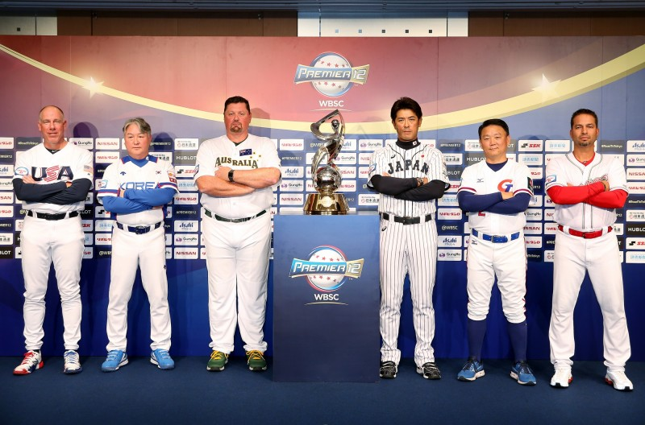
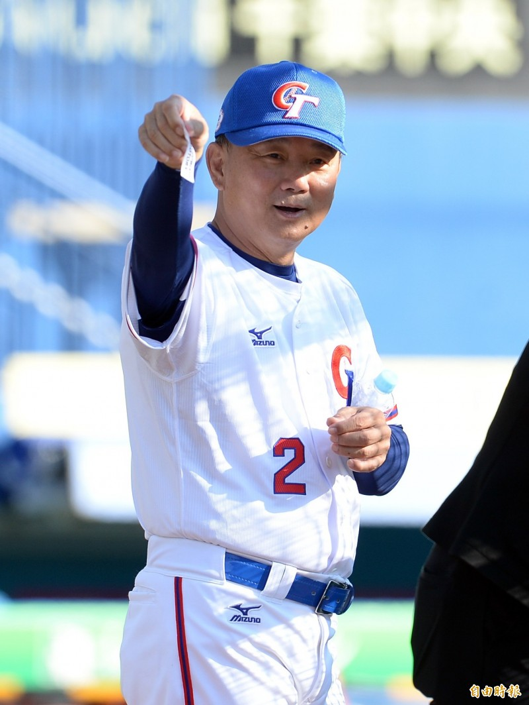
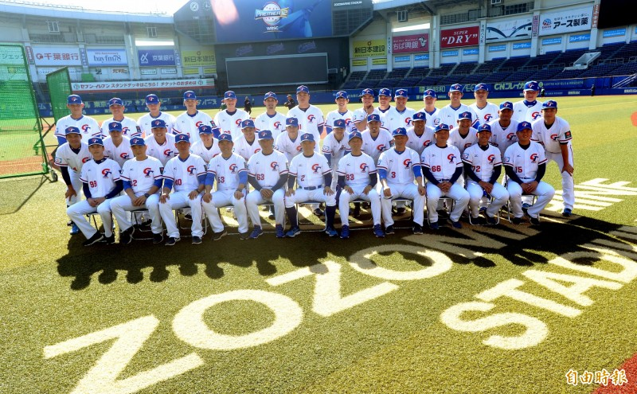

中華首戰可望對澳洲
中華隊在世界12強棒球賽爭取東京奧運門票失利，明年四月一日到五日在台中洲際、斗六球場進行的六搶一奧運資格賽成為最後希望，儘管參賽隊伍還有三隊未定，
世界棒壘球總會（WBSC）今天提前公布賽程，中華隊四月三日對決荷蘭、五日最後一戰和中國大陸交手。
六搶一奧運資格賽目前確定參賽的球隊包括中華、大陸、荷蘭，另三隊將是大洋洲代表、兩個美洲代表，大洋洲可望由澳洲參賽。
東京奧運棒球賽只有六個參賽名額，除了地主日本隊保障晉級，以色列、南韓、墨西哥也搶到門票，最後兩席將在明年三月美洲區資格賽、四月六搶一奧運資格賽各產生一隊。
WBSC今天在日本大阪開會，中華職棒、中華棒協都派代表出席，明年參加六搶一奧運資格賽的六隊，都將進行五連戰，中間未有休兵日，對中華隊形成更嚴酷的考驗，必須要有五名先發手才行。
中華隊從明年四月一日起，在短短五天內依序和大洋洲代表、美洲區資格賽第三名、荷蘭、美洲區資格賽第二名、中國交手。
  